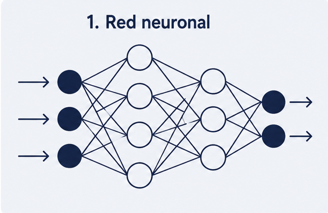

Introducción a la Inteligencia Artificial

La Inteligencia Artificial (IA) es la rama de la informática que busca crear sistemas capaces de realizar tareas que normalmente requieren inteligencia humana, como aprender, razonar, reconocer imágenes o entender el lenguaje. Gracias a grandes cantidades de datos y a algoritmos cada vez más potentes, la IA está presente hoy en asistentes virtuales, recomendaciones, traducción automática y muchas herramientas que usamos a diario.
Temas del Tutorial
- ¿Qué es la IA?
- Aplicaciones de la IA
- Herramientas Populares de IA
- Futuro de la IA
¿Qué es la IA?
La Inteligencia Artificial (IA) es una rama de la informática que crea sistemas capaces de imitar procesos cognitivos humanos, como el aprendizaje, el razonamiento, la percepción y la toma de decisiones
Aplicaciones de la IA
La Inteligencia Artificial se aplica hoy en múltiples sectores estratégicos para optimizar procesos y resolver problemas complejos. En la medicina, ayuda a diagnosticar enfermedades mediante imágenes y acelera el descubrimiento de nuevos fármacos esenciales. Por su parte, el sector financiero la utiliza para detectar fraudes en tiempo real y automatizar inversiones de riesgo. En el comercio y el entretenimiento, personaliza las recomendaciones de productos y contenidos según el perfil del usuario. Además, optimiza el transporte con sistemas de navegación inteligente y revoluciona la ciberseguridad identificando amenazas informáticas críticas. Finalmente, la industria pesada se beneficia del mantenimiento predictivo de maquinaria y la automatización robótica avanzada.
Herramientas Populares de IA
Las herramientas populares de Inteligencia Artificial lideran el mercado gracias a su especialización en tareas productivas avanzadas. En generación de texto y asistencia conversacional, destacan ChatGPT de OpenAI y Claude de Anthropic por su capacidad analítica. Para la investigación, la búsqueda de información precisa y la síntesis documental se consolidan plataformas como Perplexity AI y NotebookLM.
Futuro de la IA
El futuro de la IA se encamina hacia la Inteligencia Artificial General (AGI), capaz de igualar el intelecto humano en múltiples disciplinas complejas. Su evolución automatizará el descubrimiento científico avanzado, acelerando la creación de nuevos materiales y tratamientos médicos altamente personalizados. En el ámbito laboral, transformará el empleo impulsando la colaboración directa entre humanos y sistemas robóticos inteligentes autónomos. Sin embargo, este avance exigirá regulaciones éticas globales estrictas para mitigar riesgos de seguridad, privacidad y sesgos.